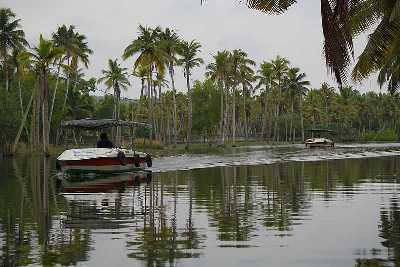
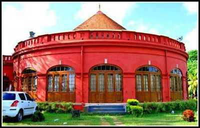
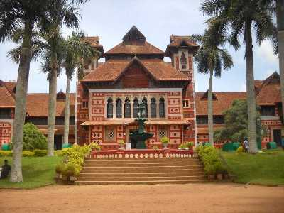
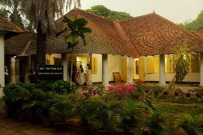
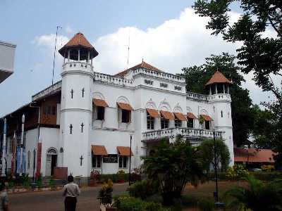
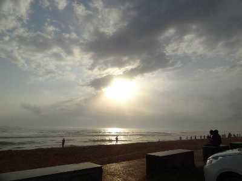

Neyyar Dam & Wildlife Sanctuary

Famous for its Lion and Deer Safari, Neyyar Wildlife Sanctuary is a treat for nature enthusiasts. The park houses a crocodile farm and elephant rehabilitation centre. Ask for a guided tour of the sanctuary which is quite informative.
Padmanabhaswamy Temple

One of the 108 Divya Desams, Sree Padmanabhaswamy Temple is located in Thiruvananthapuram, the capital city of Kerala. Embellished in gold-plated covering, the temple is opened only to Hindu followers. Dedicated to Lord Padmanabha; one of the avatars of Lord Vishnu, the Padmanabhaswamy Temple is one of the principal centres of Vaishnava worship in the dharma of Vaishnavism.
Poovar Tourism
Poovar is a small rustic town situated 27 kms from Thiruvananthapuram with unspoilt, unexplored golden sand beaches and beautiful backwaters of Kerala. Also known as a fishing village, the tranquil Poovar island lies between the Arabian Sea and the Neyyar River. Hiring a boat, (especially during the sunset)that will take you through the mangrove forest of backwaters is a must-do activity.
Kanakakunnu Palace
Close to the Napier Museum, the Kanakakunnu Palace was built under the rule of Travancore King. Today, the palace is host to plethora of cultural programs that are held on its premises.
Agasthyakoodam

Agastyakoodam, also known as Agastya Mala Peak is the second highest peak in Kerala with an extensive height of 1868 metre. Located within the premises of Neyyar Wildlife Sanctuary, Agastyakoodam is part of the Agasthyamala Biosphere Reserve and boasts of surreal natural beauty. Nestled in Sahyadris of Western Ghats, the slopes of the peak are carpeted in purple hues of orchids. Home to diverse species of fauna and rare species of medicinal herbs, the region is a hotspot for avifauna and exotic birds. The spot is considered a haven for birdwatchers. Besides, since it is a protected zone, you can spot nature at its best, without any commercial interference. The colossal peak is also a major Hindu pilgrimage spot for the devotees of the Hindu sage Agastya, on whose name the peak has been named. There is also a statue of him at the top where the Hindus can offer puja and prayers.
Napier Museum
Renowned for its fine collection of sculptures, paintings and musical instruments, the Napier Museum serves as a prime attraction of the city. Located right in the heart of the city, it is also an architectural marvel which was established around 150 years ago. In the best possible words, the Napier Museum is a delight for adults and children alike. The museum houses one of the oldest zoological gardens in India in its premises. The museum itself, based on the Indo-Saracenic styles of architecture is one of the most visited art and natural history museums in India. With works of famous artists, such as Raja Ravi Varma, and the celebrated Russian theosophist, Nicholas Roerich, and specimens of Tanjore and Mughal art forms, history was never more fun for those willing to delve into it.
Sri Chitra Art Gallery
A perfect place for art lovers, Sri Chitra Art Gallery houses some of the famous work of Raja Ravi Verma. His western form and style of paintings depicting Indian lives are an attraction here. Other art objects belonging to the Mughals, Rajputs and Tanjore art schools can also be seen.
Science and Technology Museum
Known for its tech on display, the Science and Technology Museum was founded in 1984. The museum draws a huge number of visitors into its chambers, especially the science enthusiasts.
Shanghumukham Beach
One of the most popular beaches, Shanghumukham Beach is known for its pristine waters and soulful sunsets. It runs next to the Trivandrum airport and a must visit for those seeking tranquility.